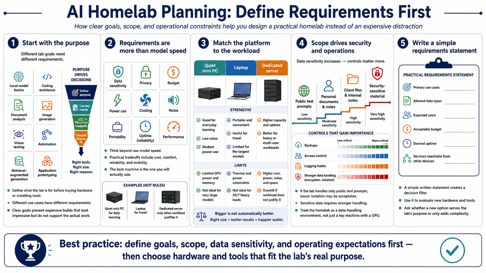

Goals, Scope, and Requirements
Connecting to LMS... Progress: in progress

Narration
Before buying hardware or installing tools, define what the lab is for. A lab for learning local model basics has different requirements than a lab for coding assistance, document analysis, image generation, vision testing, automation, retrieval-augmented generation, or application prototyping. Clear goals prevent expensive builds that look impressive but do not actually support the work you want to do.
Requirements should include more than model speed. Think about data sensitivity, privacy expectations, budget, power use, cooling, noise, portability, uptime, and performance. A quiet mini PC may be better for everyday learning than a loud workstation that you avoid turning on. A laptop may be useful for travel even if it cannot run the largest models. A dedicated server may make sense only when the workload and operating expectations justify it.
Scope also helps decide how formal the lab should be. If the lab handles only public test prompts, you may accept looser isolation. If it handles personal documents, client files, internal notes, or security-sensitive material, you need stronger data handling, backups, access control, and logging habits. Treat the lab as a data-handling environment, not just a toy machine with a GPU.
A practical requirements statement can be simple. Name the primary use cases, the kind of data allowed in the lab, the expected users, the acceptable budget, the desired uptime, and the services that should be reachable from other devices. This gives you a decision filter. When a new tool or hardware option appears, you can ask whether it serves the lab's purpose or simply adds complexity.